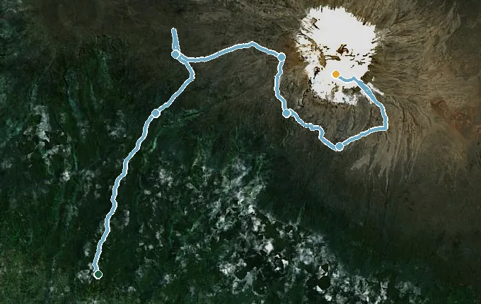
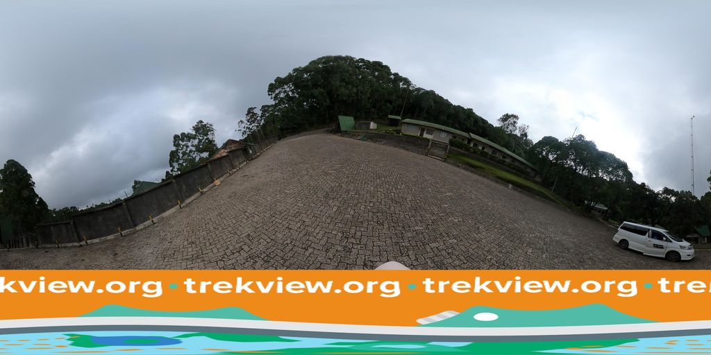
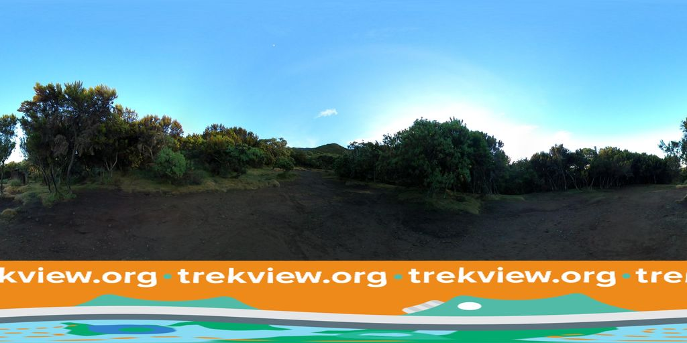
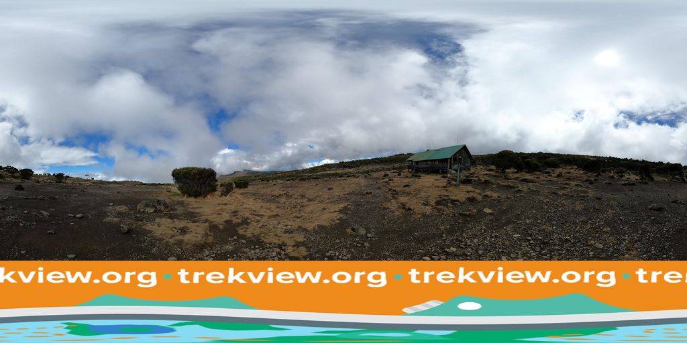
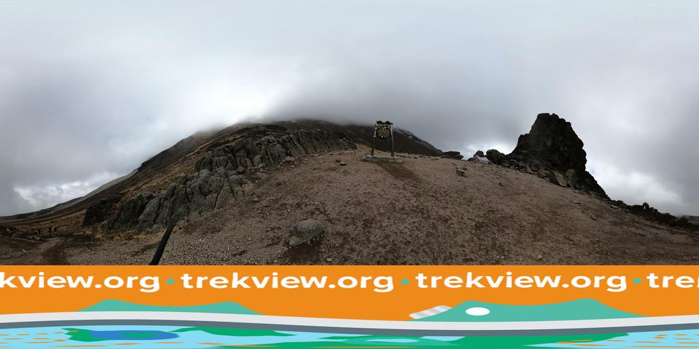
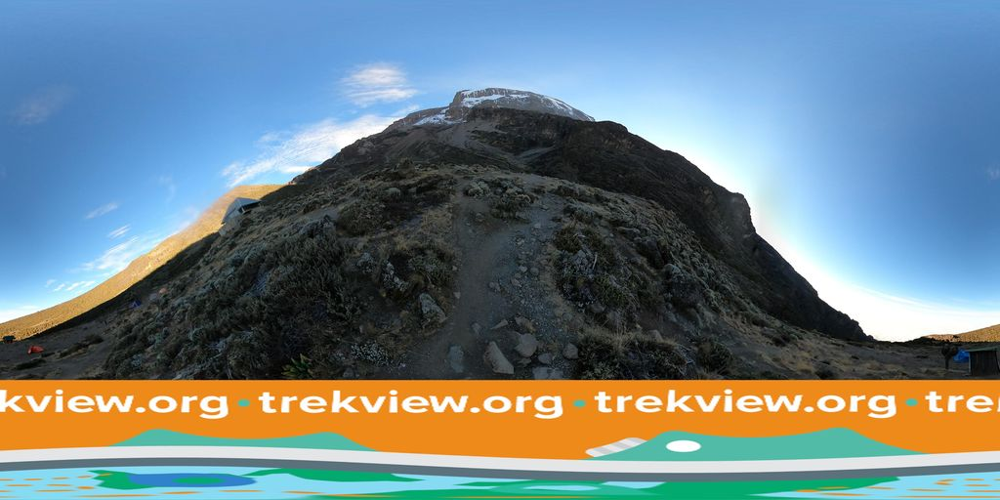
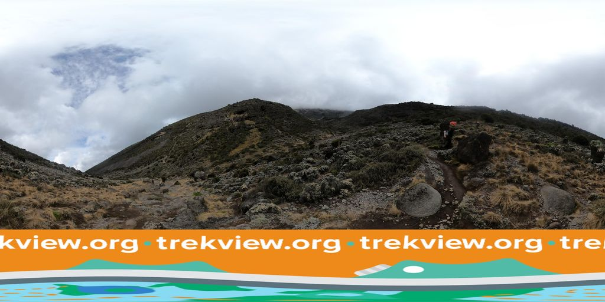
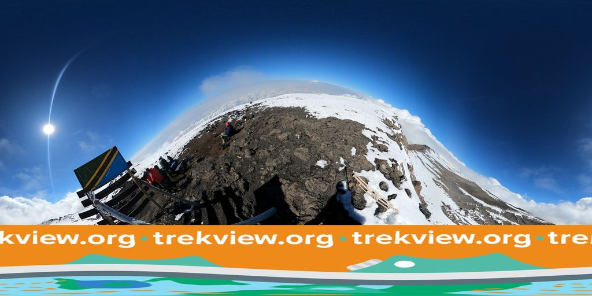

Kilimanjaro (Machame Route)
Climb the Machame Route through rainforest and alpine desert to Uhuru Peak, the roof of Africa.
45 km through Tanzania, ending at Uhuru Peak. You begin at Machame Gate. Watch Walks moves you along it with the steps you already take, so it's about 2 weeks at 5,000 steps a day. Here are its 7 landmarks, in the order you meet them, photographed and written up.
- 45km end to end
- 7landmarks
- 2 weeksat 5,000 steps a day
- Uhuru Peakfinishes at

The landmarks of Kilimanjaro (Machame Route)
7 landmarks, in walking order. Each photograph is by the person credited beneath it, used as they licensed it.
-

Photo: trekviewed · Mapillary, CC BY-SA 4.0 Machame Gate
The Machame Gate at 1,800 metres is where the climb to the roof of Africa begins, in dense montane rainforest loud with birdsong and colobus monkeys. Porters weigh their loads and sign the register here. The Whiskey Route earns its name for being tougher and far more beautiful than the gentler Marangu. The trail climbs at once into the dripping forest.
-

Photo: trekviewed · Mapillary, CC BY-SA 4.0 Machame Camp
The first night's camp sits at 3,000 metres on the forest's upper edge, where the trees give way to giant heather. Cloud boils up the slopes each afternoon. From a clearing the glaciered dome of Kibo shows itself for the first time, a full three vertical kilometres still above. The air already comes noticeably thinner.
-

Photo: trekviewed · Mapillary, CC BY-SA 4.0 Shira Cave Camp
The route breaks out onto the Shira Plateau, the filled caldera of Kilimanjaro's oldest cone, a vast tilted moorland of tussock and everlasting flowers at 3,850 metres. Kibo fills the eastern sky. Nights here are bitterly cold and the stars enormous. Acclimatisation, not distance, now sets the pace.
-

Photo: trekviewed · Mapillary, CC BY-SA 4.0 Lava Tower
At 4,600 metres the trail reaches the Lava Tower, a ninety-metre plug of rock where the climb-high, sleep-low rule is put to work. Most walkers feel the altitude keenly here. The alpine desert is bare rock and dust under a hard sky. From the tower the route drops steeply into the green haven of the Barranco valley.
-

Photo: trekviewed · Mapillary, CC BY-SA 4.0 Barranco Camp
Barranco Camp lies at 3,900 metres beneath the sheer Barranco Wall, in a valley strange with giant groundsels and lobelias found nowhere but these mountains. The drop from Lava Tower aids acclimatisation. The Wall rears 250 metres above the tents, the next morning's first task. Kibo's Western Breach glowers overhead.
-

Photo: trekviewed · Mapillary, CC BY-SA 4.0 Karanga Camp
After scrambling the Barranco Wall and crossing a run of ridges and valleys, the trail reaches Karanga at 4,000 metres, the last water on the route. Beyond here everything must be carried up the mountain. The vegetation is gone now, only rock and ice ahead. Summit night is close.
-

Photo: trekviewed · Mapillary, CC BY-SA 4.0 Uhuru Peak
Uhuru Peak, 5,895 metres, is the highest point in Africa, reached at dawn after a freezing night-long climb over scree and ice past Barafu, the summit base camp. Uhuru means freedom. The shrinking glaciers glow pink in the first light, and the curved shadow of the mountain falls across the plains far below. Sign the register, and start down before the sun softens the snow.
Walking Kilimanjaro (Machame Route)
Your watch is already counting these steps. Watch Walks spends them on Kilimanjaro (Machame Route), all 45 km of it, and hands you each landmark as you reach it. There's no route recording, no account and no ads. The Inca Trail is free; this one is a one-time purchase with no subscription.
Other trails in Africa
- Walk the Nile 1,500 km · Egypt
- High Atlas Traverse 303 km · Morocco
- Mount Kenya (Chogoria Route) 39 km · Kenya
- Otter Trail 37 km · South Africa
- Kilimanjaro (Lemosho Route) 70 km · Tanzania
- GR R2 (Réunion) 144 km · Réunion